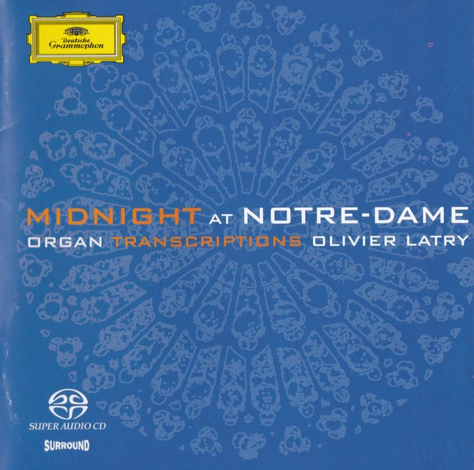

SACD
Midnight At Notre-Dame: Organ Transcriptions
Olivier Latry
Media: — · Sleeve: —
—
Personal
Discogs SuggestedCA$46.03
Discogs MedianCA$46.03
Discogs HighCA$46.03
- Physical Copy ID
- BB-SACD-119
- Year
- 2004
- Label
- Deutsche Grammophon
- Catalog #
- 00289 474 8162
- Country
- Europe
- Genre / Style
- Classical · Organ, Baroque, Romantic, Modern